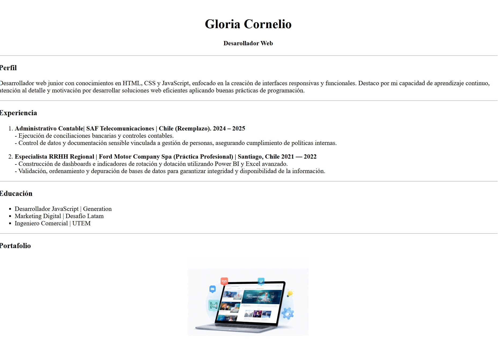

| Proyecto | Descripcion | Año | Enlace |
|---|---|---|---|
 |
Desarrollo de un proceso de web scraping utilizando R para extraer y analizar información de sitios web de anime, recopilando datos sobre géneros, cantidad de animes por categoría y rankings. |
2021 | JkAnime |
 |
Desarrollo de mi primer proyecto web consistente en la creación de un currículum vitae digital utilizando HTML. El proyecto incluye la estructuración de secciones como perfil profesional, experiencia, educación, portafolio y proyectos, aplicando etiquetas semánticas y organización básica de contenido para la presentación clara de información profesional en formato web. |
2026 | Mi CV |